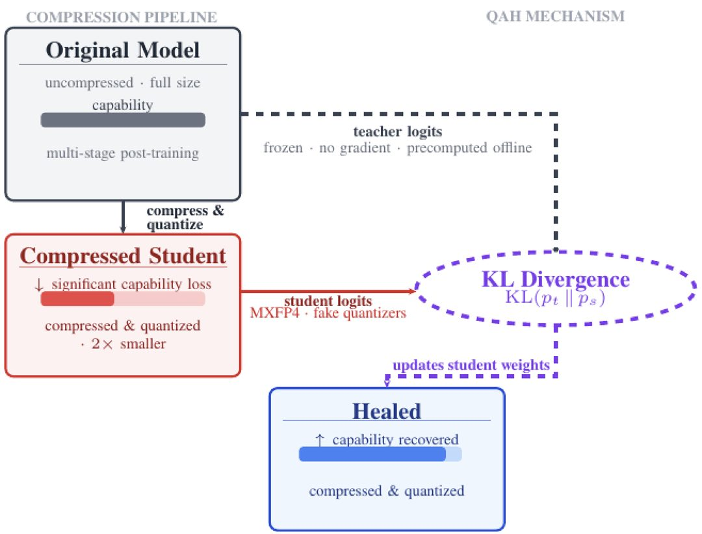
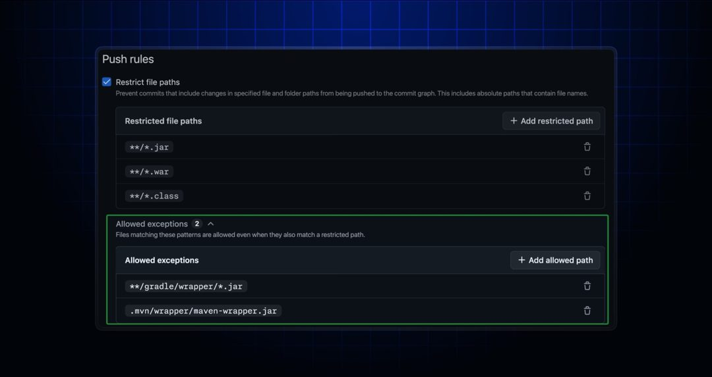
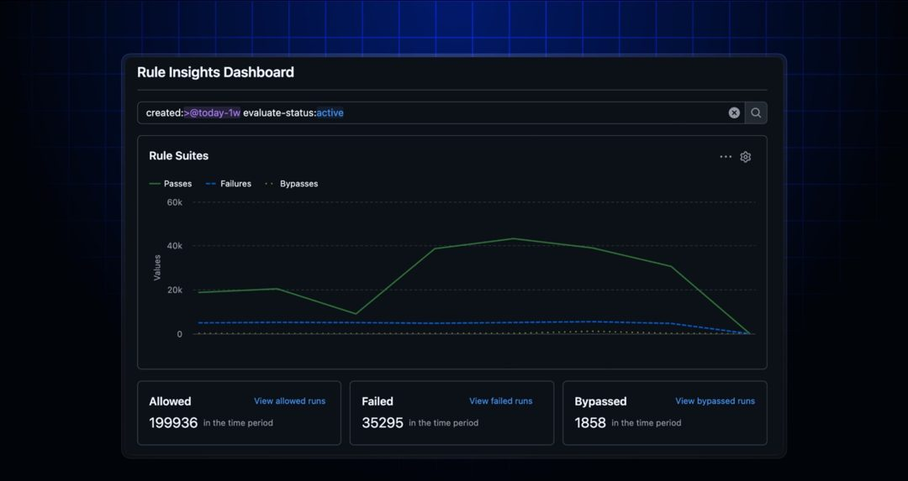

AI 雷达
8月27日 周四 · 每日 AI 精读
AI 雷达 · 8月27日｜今日精读10条
官方更新
① Granite 4.2 LLMs 是如何构建的
Granite 4.2 是首个 dense decoder-only 推理 LLM 系列，提供 3B、8B 和 30B 三种规格，均采用 Apache 2.0 许可证发布。模型从零开始预训练约 15T tokens，通过五阶段策略将上下文窗口扩展至 512K tokens，随后使用思维链、推理及智能体轨迹数据进行监督微调，并经由包含 Agentic RL 的多阶段强化学习管线完成训练。其中 8B 和 30B 模型在真实沙盒环境中学习工具调用、代码编辑执行、终端操作及网络搜索等智能体行为。所有模型均支持原生工具调用，并配备 thinking/non-thinking 切换开关及针对简单问题分配短推理预算的 low-effort thinking 模式。三个尺寸共享相同架构设计与训练流程，主要能力差异体现在后训练阶段，8B 与 30B 额外增加了智能体强化学习模块。
官方更新 · Hugging Face Blog · 1 个来源
原文：https://huggingface.co/blog/ibm-granite/granite-4-2
② Granite Speech 5.0 Turbo CTC：极速精准语音转写
Granite Speech 5.0 Turbo CTC 系列发布了两款 470M 参数的紧凑型英语语音识别模型，在 NVIDIA H200 GPU 上实现超过 12,600 RTFx 的吞吐量，批量推理下一秒可转写逾 3.5 小时语音。两款模型均为 encoder-only 架构，其中 granite-speech-5.0-470m-turboctc-nc 采用 CC-BY-NC-SA-4.0 许可并使用更多训练数据，在 OpenASR Leaderboard 公开测试集上取得 4.85% WER；Apache 2.0 许可的 granite-speech-5.0-470m-turboctc WER 为 5.00%。在 FFASR Leaderboard 远场语音识别评测中，非商业版准确率排名第五，Apache 2.0 版排名第九，两者均为该榜单速度最快的模型。
官方更新 · Hugging Face Blog · 1 个来源
原文：https://huggingface.co/blog/ibm-granite/granite-speech-5-0-470m-turboctc
③ 量化感知修复：4-bit压缩模型性能反超全精度原版
Quantization-Aware Healing（QAH）方法应用于经结构压缩至60B参数并量化为MXFP4的GPT-OSS 120B模型后，该4-bit模型在9项基准测试中的7项上性能超越了其全精度bfloat16原版，实现了更小体积、更低运行成本与更高准确率。针对现有量化感知训练（QAT）需重跑多阶段后训练且易不稳定、量化感知蒸馏（QAD）仅适用于纯量化场景等局限，QAH专门解决模型先经结构压缩再量化后的恢复难题。该方法使4-bit压缩模型反超16-bit源模型成为可能，改变了低精度模型必然弱于高精度原版的常规认知，为已压缩模型的量化恢复提供了新路径。

图源：huggingface.co
官方更新 · Hugging Face Blog · 1 个来源
原文：https://huggingface.co/blog/MultiverseComputingCAI/quantization-aware-healing
④ LLM 上线前该如何评估？
LLM 在基准测试中表现良好并不意味着能适应生产环境，真实输入往往存在歧义、标签不一致或上下文缺失，导致离线指标无法直接转化为线上效果。针对 secret scanning 减少误报的场景，评估核心并非模型分类准确率，而是系统能否在降低噪声告警的同时保持足够召回率以确保安全。该场景将精确率作为首要优化目标，召回率则作为安全约束，实验仅在召回率下降处于预定义可接受范围内时才可推进。有效的评估应始于产品决策而非模型调整，需先明确评估所支持的具体业务决策、可接受的错误类型及驱动决策的指标，并设定必须维持的防护阈值，避免在未定义目标前盲目修改提示词或切换模型。
图源：github.blog
官方更新 · GitHub AI & ML · 1 个来源
原文：https://github.blog/ai-and-ml/llms/how-to-evaluate-llms-before-production
⑤ 支持直接从安全公告中封禁用户
现在支持在组织或个人账户拥有的公开仓库安全公告页面中直接封禁用户。这一功能将原本分散的审核流程整合至安全公告界面内，允许维护者在查看或处理安全相关议题时即时执行封禁操作，无需跳转至其他管理后台。该更新旨在简化公开仓库的安全事件响应与社区治理步骤，使针对恶意行为者的处置动作能够与安全风险披露同步完成，提升维护者在应对安全威胁时的操作效率与连贯性。
官方更新 · GitHub Changelog · 1 个来源
原文：https://github.blog/changelog/2026-08-25-block-users-directly-from-security-advisories
⑥ GitHub Copilot 应用 Customize 选项卡正式全面开放
GitHub Copilot 应用中的 Customize 选项卡已正式全面开放，该功能旨在让 Copilot 与团队现有的工具、知识及工作流深度整合。此次更新在 Customize 选项卡中引入了 MCP 支持，使用户能够根据自身需求对 Copilot 进行定制化配置。通过将模型能力与团队实际依赖的开发环境和业务流程直接对接，Copilot 的实用性和适配度得到提升。这一调整意味着开发者不再局限于通用交互模式，而是可以在应用内通过专属设置页面，将外部工具链和内部知识库纳入 Copilot 的工作上下文，从而实现更贴合具体业务场景的智能辅助体验。
图源：github.blog
官方更新 · GitHub Changelog · 1 个来源
原文：https://github.blog/changelog/2026-08-25-github-copilot-app-customize-tab-is-generally-available
⑦ 规则集中的推送规则现已支持路径例外
推送规则配置现已支持路径例外功能，允许用户通过豁免特定文件路径来实现更细粒度的控制。启用该功能后，设定的推送规则将在作用范围内全局生效，但会自动排除用户指定的路径。这一更新使得规则应用不再局限于整体范围，而是能够针对具体文件路径进行差异化处理，目前路径例外功能已正式公开可用。用户在配置推送规则时可直接设定例外路径，确保规则仅作用于非豁免区域，从而满足对代码仓库不同目录实施差异化推送策略的需求。

图源：github.blog
官方更新 · GitHub Changelog · 1 个来源
原文：https://github.blog/changelog/2026-08-25-push-rules-in-rulesets-now-support-path-exceptions
⑧ 用 Google Search 升级家居装饰的5种方法
过去一个月“home decor inspo”搜索量增长300%，“bathroom inspo”和“living room inspo”成为突破性搜索词，今年流行涂料色包括teal和magenta。Google Search提供多种工具辅助家居装饰落地：通过Search AI Mode上传房间照片并输入具体尺寸（如84英寸宽墙面），可生成家具摆放效果图；使用Google Lens拍摄vintage物品照片，能识别信息并推荐同价位相似商品，“vintage braided rugs”和“vintage wood coffee table”为当前热门趋势；借助Circle to Search功能，在Pixel和Samsung Galaxy S26设备上长按导航栏圈选屏幕内容即可查找同款，近期fish wallpaper搜索量上涨140%；此外还可利用Search Live获取DIY项目实时视频指导，并通过价格历史追踪确保获得最优折扣。
官方更新 · Google AI Blog · 1 个来源
原文：https://blog.google/products-and-platforms/products/search/home-decor-tips
⑨ Jalapeño 首测出炉：AI 推理速度与效率领跑行业
OpenAI 自研推理芯片 Jalapeño 首次测试结果出炉，该芯片专为现代模型设计，在 AI 推理环节实现了更快的速度与更高的能效。测试数据显示，Jalapeño 具备更高的吞吐量和更低的延迟，同时保持了优异的功耗效率，整体推理性能与能效表现均处于行业领先水平。作为 OpenAI 的定制硬件，Jalapeño 直接针对当前主流 AI 模型的推理需求进行优化，验证了其在提升推理速度、降低延迟及改善能耗方面的实际效果。
图源：openai.com
Jalapeño 首测出炉：AI 推理速度与效率领跑行业（OpenAI News, Zeli）
官方更新 · OpenAI News等 · 1 个来源
原文：https://openai.com/index/jalapeno-first-results
⑩ Rule Insights 仪表板正式全面开放
Rule Insights 仪表板现已在 repository 和 organization 层级全面开放。该功能提供可视化的高层视图，用于展示 GitHub 如何评估和执行 repository 规则。用户可通过此仪表板直观了解规则的具体生效情况与执行状态，无需再依赖零散的日志或配置页面进行排查。这一更新覆盖了从单个代码仓库到整个组织的管理范围，使规则合规性的监控与验证流程更加集中和透明。

图源：github.blog
官方更新 · GitHub Changelog · 1 个来源
原文：https://github.blog/changelog/2026-08-25-rule-insights-dashboard-generally-available
以上内容由 AI 雷达 自动整理自过去 24 小时的公开信源，图片来自原文页面，原文出处链接见每条信息下方。
以下为发布辅助信息（复制用，粘贴时请勿包含本区块）
标题：AI 雷达 · 8月27日｜今日精读10条
摘要：AI 雷达8月27日 周四精读 10 条 AI 要闻：Granite 4.2 LLMs 是如何构建的。更多条目见「阅读原文」。
阅读原文：https://hutaojiazi010304.github.io/ai-news-radar/